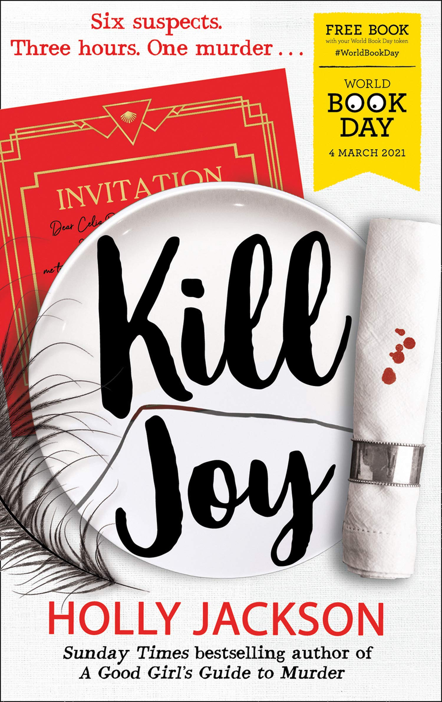

"Kill Joy" is a prequel novella in the "A Good Girl's Guide to Murder" series, focusing on Pippa Fitz-Amobi before the events of the main trilogy. The story takes place during a murder mystery party hosted by her friend Connor and his brother Jamie, where Pip is initially reluctant to participate due to her disinterest in the theme and the setting, which involves 1920s fancy dress and a fictional island called Joy.
As the party unfolds, Pip becomes engrossed in the game, which revolves around the fictional murder of Reginald Remy. Throughout the night, she plays detective, piecing together clues and engaging with her friends, all while reflecting on her own thoughts about real-life mysteries that have affected her town. This experience serves as a catalyst for Pip's passion for solving mysteries, ultimately inspiring her to pursue her Capstone Project in the subsequent series.
The novella is characterized by its lighthearted tone, despite the murder theme, and provides readers with deeper insights into Pip's character and motivations. It emphasizes themes of friendship, intrigue, and the joy of detective work, making it a delightful read for fans of the series who want to explore Pip's early inspirations and the dynamics of her social circle